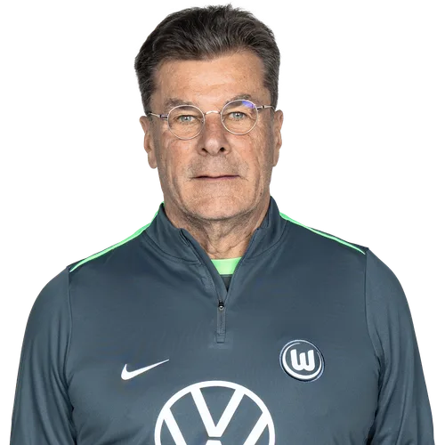
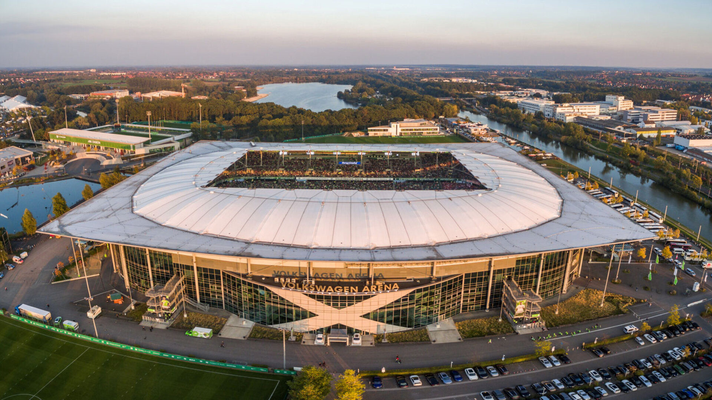

Treinador: Dieter Hecking
Dieter Hecking é o atual treinador do Wolfsburg. O experiente técnico alemão assumiu o comando da equipa em março de 2026, regressando ao clube após uma primeira passagem de grande sucesso, com a missão de estabilizar os resultados e recolocar os Lobos nos palcos cimeiros da Bundesliga.

Estádio: Volkswagen Arena
A Volkswagen Arena é o estádio oficial do Wolfsburg. o moderno recinto destaca-se na Bundesliga pela sua infraestrutura tecnológica de vanguarda, pelo teto translúcido que protege as bancadas e pela sua forte ligação industrial à sede global da construtora automóvel.

Estilo de Jogo:
O estilo de jogo que Dieter Hecking utiliza no Wolfsburg baseia-se num sistema tático clássico, focado no pragmatismo, no equilíbrio defensivo e na exploração máxima dos corredores laterais.
"Arbeit. Fußball. Leidenschaft!"